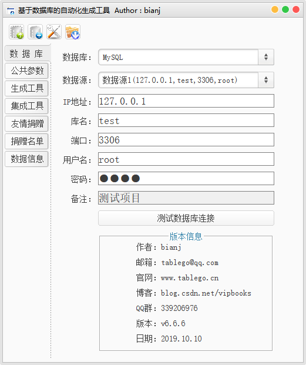

原文连接:https://www.cnblogs.com/vipbooks/p/11767332.html
TableGo_20191026 v6.6.6 正式发布，此次版本更新如下：
1、新增通过自定义模板生成Word文档的功能，可以使用FreeMarker模板生成自定义格式的数据库文档。
2、新增 Swagger2 在线API转离线API文档的功能，生成Word接口文档。
3、新增对 MariaDB 数据库的支持，需要删除旧的database.ini重新生成。
4、生成数据库文档添加高级设置，可以配置ER图的背景色、边框颜色、可选参数等。
5、生成自定义文件功能增强，加入更多参数。
6、表字段名以下划线结尾的已支持，不再丢失结尾的下划线。
7、表名或字段名同时包含下划线和驼峰命名这两种命名方式已支持。
8、完善代码生成后的提示信息，添加新增文件数、覆盖文件数、合并文件数、忽略文件数的提示。
9、数据库字段数据类型对应的Java数据类型全部都可以在paramConfig.ini中配置了。
10、修复已知Bug并进行了一些优化。
一直以来一个能自动生成前后端增删查改代码的工具就是程序员很希望拥有的东西，如果能自动生成框架的前后端代码，那么开发人员就只要关注业务代码的编写，工作效率将得到极大的提升，也能腾出更多的时间、精力去测试和优化代码。
TableGo是基于数据库的代码自动生成工具，可以根据数据库表结构自动生成JavaBean、生成MyBaits的Mapper映射配置文件、生成数据库设计文档、生成Swagger2离线API文档、生成前后端代码等，更重要的是可以根据每个项目的不同开发框架编写自定义模板生成各模块增删查改的前后端代码，让开发人员的开发效率提高60%以上，并且可以通过模板定义开发规范统一开发风格和标准，提高代码的规范性和可维护性。
只要设计好数据库并且添加好备注，就能通过自定义模板生成任意编程语言的任何程序代码，并且能够生成各种代码备注。实现只要把数据数据库设计好，整个项目就完成了很大一部分代码的编写，大大节省了项目的开发成本。支持MySQL、Oracle、SQL Server、PostgreSQL四种数据库，支持Window、Linux、MacBook等多种操作系统。
所有的配置都保存在本地，只要配置过一次，下次使用的时候完全可以秒生成JavaBean、MVC三层结构代码、前后端代码、MyBaits的Mapper映射文件和数据库设计文档等，并且还集成各种实用工具，使得工作效率瞬间爆棚，生产力瞬间爆表！
经过一些项目的使用和积累，我把它分享出来，大家有什么好的建议和想法也都可以提出来。由于环境的原因，主要测试的是MySQL、Oracle，SQL Server、PostgreSQL测试不全，因为比较忙，没有时间去做非常全面的测试，可能会有Bug，大家如果发现什么Bug记得要告诉我，会在下个版本中进行修正。
欢迎访问TableGo官网：http://www.tablego.cn
1、数据库配置界面：

2、公共参数配置界面：
2.png)

3、生成工具界面，集成各种自动生成工具，让写代码变得更容易：
4.png)

4、集成工具界面，集成11款实用工具，工作效率瞬间提升数倍：
6.png)

5、友情捐赠界面，项目的发展离不开您的支持：
8.png)

6、捐赠名单界面，感谢你们对TableGo项目的支持：
10.png)

7、数据信息界面，TableGo官网信息展示，并能获取TableGo新版本更新提示：
12.png)

14.png)

8、这是自动生成出来的Entity和DTO：
16.png)

18.png)

9、这是自动生成的MyBatis的Mapper映射文件：
20.png)

10、这是自动生成的数据库设计文档：
22.png)

11、这是编写的自定义模板和根据该模板生成的Mapper.xml代码：
24.png)

26.png)

12、这是最新的TableGo源代码统计数据：
28.png)

13、提供Jar包版本，完美支持Linux和MacBook，MacBook只需要在“安全性与隐私”那里允许打开TableGo.jar就可以了：
30.png)

32.png)

34.png)

36.png)

14、QQ技术交流群（群号：339206976，入群密码：TableGo）：
38.png)

在QQ技术交流群里会不定期发布最新的测试版、使用手册和自定义模板示例给大家使用，大家在使用的过程中遇到什么问题或发现什么Bug都可以在交流群里提出来，大家一起讨论一起学习，共同发展和进步。
使用TableGo需要安装JDK7及以上版本的，因为现在用的开发环境和编译环境都是JDK7，其它版本的JDK还没有测试过，更高版本的应该没有问题，必需要在操作系统的环境变量里配置好JAVA_HOME，不然会找不到Java。
官网下载地址：http://www.tablego.cn
EXE版本下载地址：
https://download.csdn.net/download/vipbooks/11934312
Jar包版本下载地址：
https://download.csdn.net/download/vipbooks/11934334
目录：
第1版：http://blog.csdn.net/vipbooks/article/details/51912143
第2版：http://blog.csdn.net/vipbooks/article/details/51912537
第3版：http://blog.csdn.net/vipbooks/article/details/51912750
第4版：http://blog.csdn.net/vipbooks/article/details/51912930
第5版：http://blog.csdn.net/vipbooks/article/details/51915364
第6版：http://blog.csdn.net/vipbooks/article/details/51916266
第7版：http://blog.csdn.net/vipbooks/article/details/51916507
第8版：http://blog.csdn.net/vipbooks/article/details/52005477
第9版：http://blog.csdn.net/vipbooks/article/details/52005926
第10版：http://blog.csdn.net/vipbooks/article/details/52226266
第11版：http://blog.csdn.net/vipbooks/article/details/52806475
第12版：http://blog.csdn.net/vipbooks/article/details/53242808
v4.1.2版：http://blog.csdn.net/vipbooks/article/details/54234432
v5.0.0版：http://blog.csdn.net/vipbooks/article/details/72653898
v5.8.0版：http://blog.csdn.net/vipbooks/article/details/78767469
v5.8.8版：http://blog.csdn.net/vipbooks/article/details/79492051
v6.0.0版：http://blog.csdn.net/vipbooks/article/details/90244554
v6.6.6版：http://blog.csdn.net/vipbooks/article/details/102786571